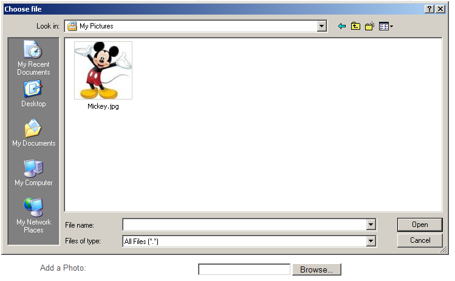

View the Project on GitHub csjv/crossrail-jv-observation-form
View the Application Documentation
This document details the instructions on how to use the Observation Form Web Application system to submit Good & Unsafe Practices.
Clicking on the Create New Observation button takes you to the Observation Form.
1. Select your Contract Number by clicking on the relevant radio button.
2. Select the Type of Observation – Good Practice or Unsafe Condition by clicking the relevant radio button.
For example if a Good Practice is selected the Category of Observation is not detailed as below,
3. Enter in the Date of Observation, Time and description of Observation.
4. Reported by Full name and Phone number are optional and can be detailed if desired. Known contractor or contractors involved is also optional to enter.
5. Add a photo of the observation by clicking on the browse button and selecting from your PC.

6. To receive a copy of the observation raised, check the square button and enter your email address.
7. Add your company reservation number if required and Click submit to complete.
If an Observation is created for an Unsafe Condition all the above instructions apply. In addition when an Unsafe condition is selected further information is required as shown below.